Every repo you own, one keystroke away.
Press the hotkey from anywhere and every repo you own is there, each with its branch and anything you've left uncommitted, unpushed or half-done — in Git, Jujutsu, Mercurial, Subversion, Fossil or Breezy. Type a few letters and pick from what that project can actually do: its scripts, your editors, a shell right in the overlay. It's gone the moment you're done.
Press Ctrl \ to bring it up, and again to put it away.
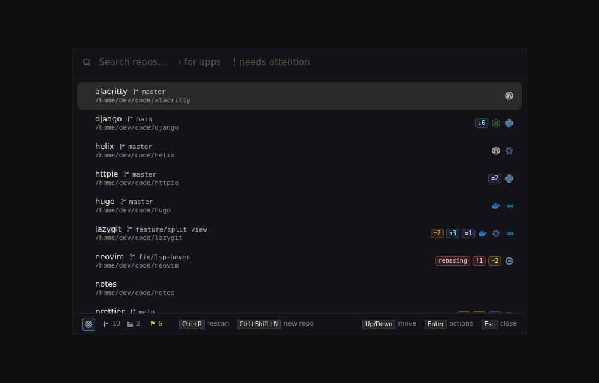
Know where every repo stands
Each repo shows the branch it's on, and flags for anything that exists only on this machine or is left half-done: changed files, commits nobody else has, stashes, a rebase that stopped on a conflict.
Type ! for just the repos that need you, worst first — the end-of-day sweep, across everything. Search finds branches too, so a ticket number brings up every repo working on it.
Git, Jujutsu, Mercurial, Subversion, Fossil and Breezy, each in its own terms, kept current in the background as you work.
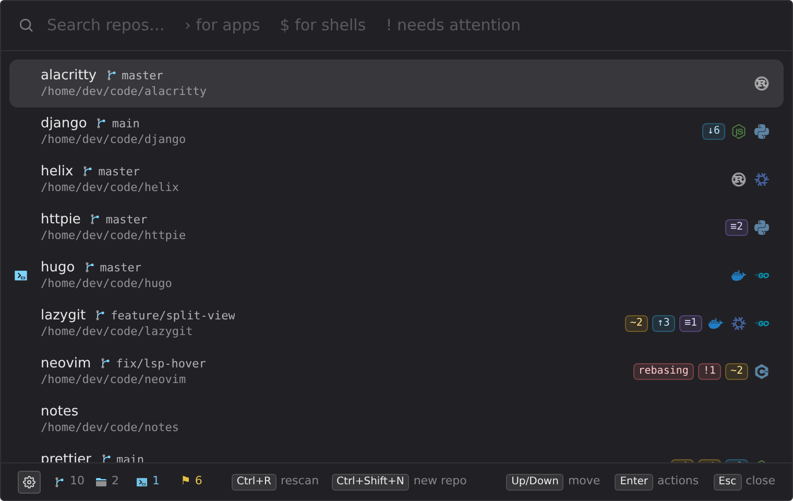
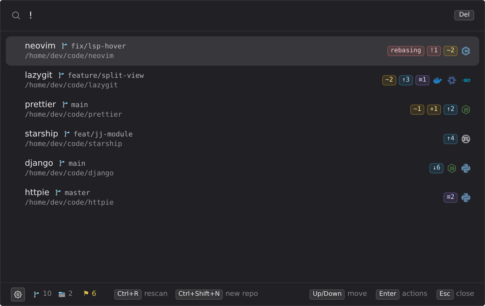
Branches, and the next step
A repo's menu spells out where it stands and offers only what's safe in one keystroke right now: a fast-forward pull, a push to its upstream, publishing a new branch, a fetch — and the branch or a new pull request on GitHub, GitLab, Bitbucket or Azure DevOps.
Ctrl B switches branch from a fuzzy list. Ctrl Enter opens one in a second working copy beside the repo — a worktree for an AI agent or a long build, without touching the one you're in.
Nothing is ever forced. Staging, commits and conflicts open in your Git client instead — Fork, GitKraken, lazygit and the rest.
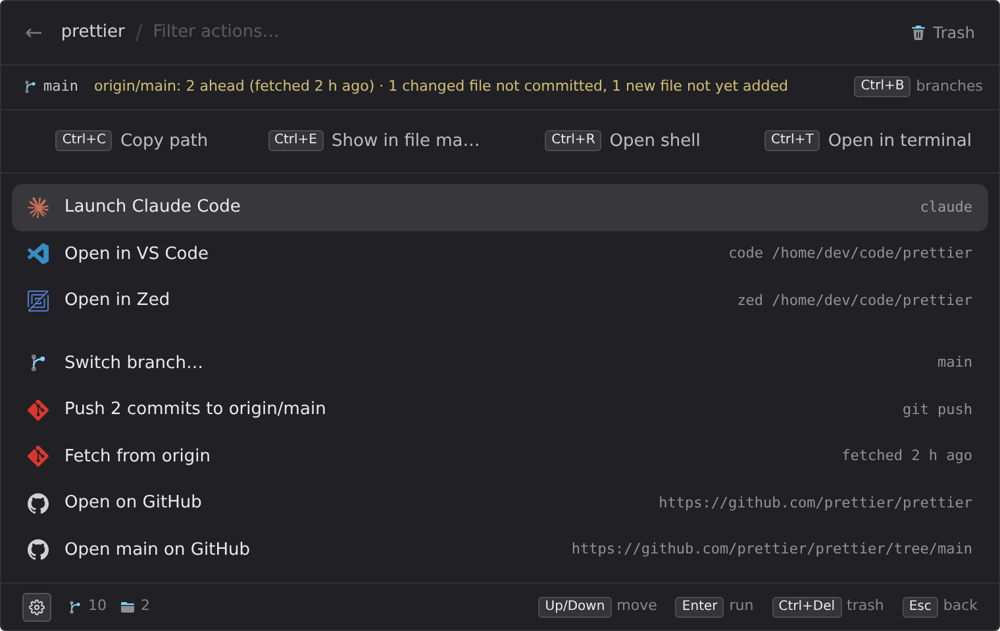
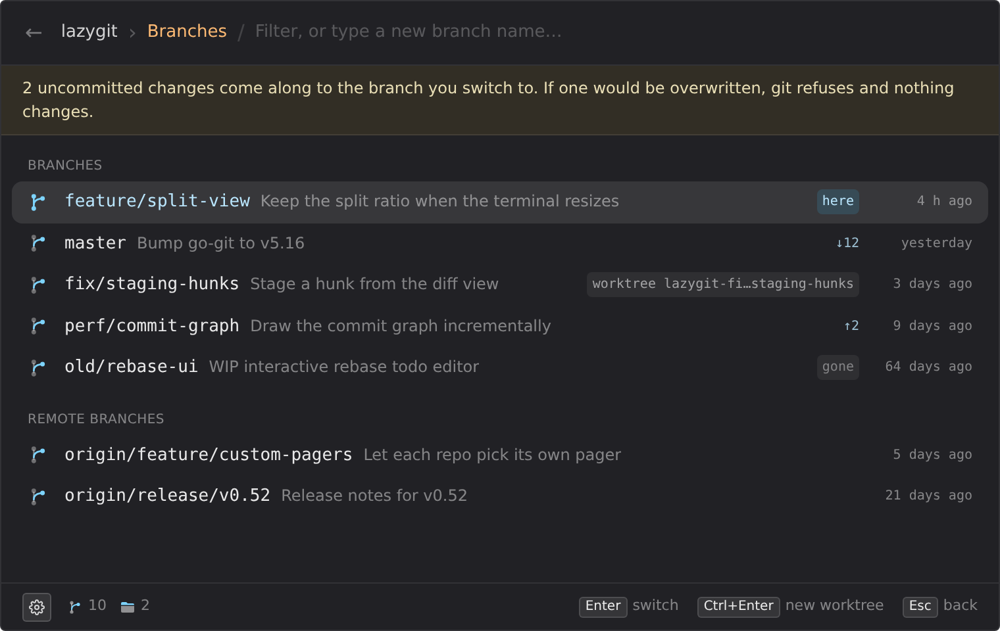
It reads the project
Picking a repo walks it once and builds the menu from what's there:
package.json scripts through npm, pnpm, yarn or bun — whichever the
project uses — Cargo, Go, Python, .NET, Docker Compose, the targets in a Makefile,
justfile or Taskfile, and a menu of their own for sub-projects.
Your terminal, file manager, editors and AI tools sit on top, and anything you haven't installed simply isn't there. Hold Shift to run any of it as administrator — Ctrl Shift T is an admin terminal in the repo.
It's all one YAML file, so teaching it a new tool takes a few lines.
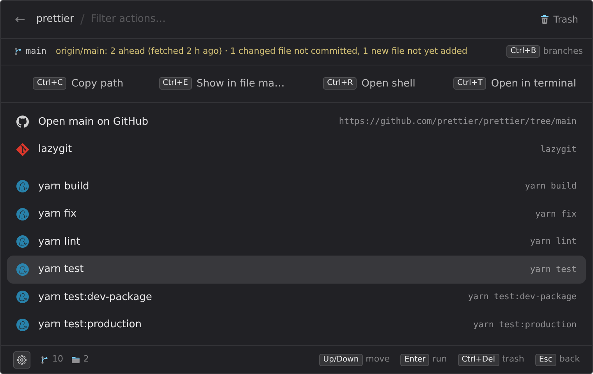
A shell that stays open
Ctrl R opens your own shell — pwsh, bash, zsh, fish — right in the overlay, in that repo, with your prompt and history.
Hide the overlay and it keeps running, so a dev server stays up; the hotkey brings you straight back. Type $ to see every shell you've left running, and close any of them from there.
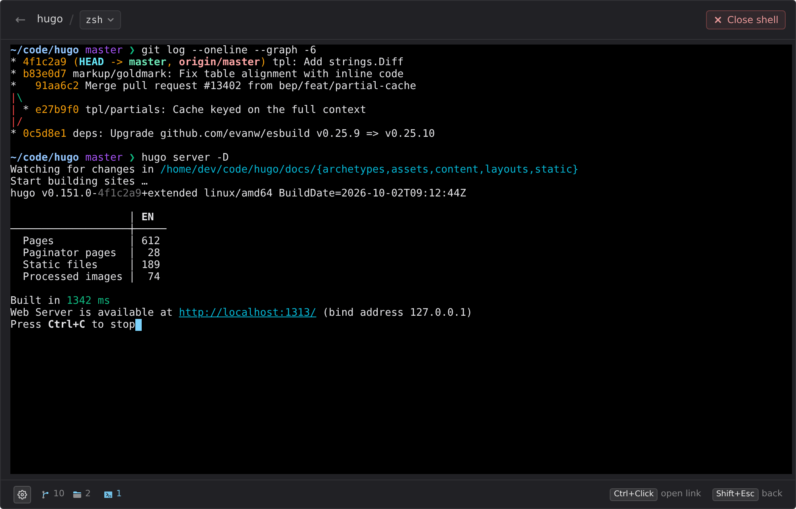
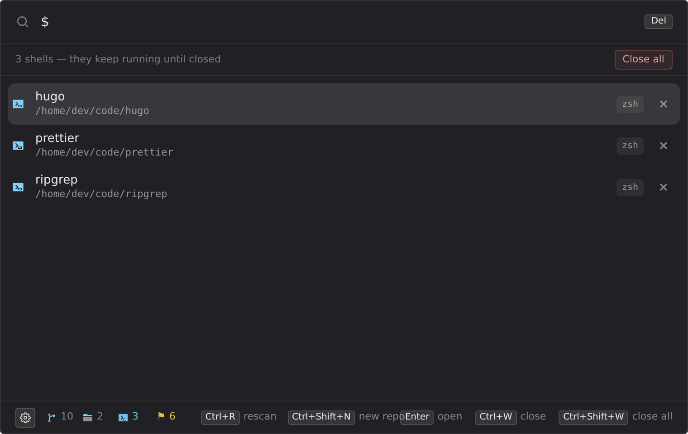
Clone, start or retire a repo
Paste a repository's address into the search to clone it into one of your folders — Git, Jujutsu, Mercurial, Subversion, Fossil or Breezy, whichever can read it. A big one clones in the background while you carry on, and you can stop it any time.
Or create a repository with Git, Jujutsu, Mercurial, Breezy or Darcs already set up, or put an existing folder under version control.
When one's done with, it goes to the Trash — but first dev-prompt checks for uncommitted work, commits that aren't on any remote, and stashes, and asks you to type the name if anything would be lost. Undo is right there afterwards.
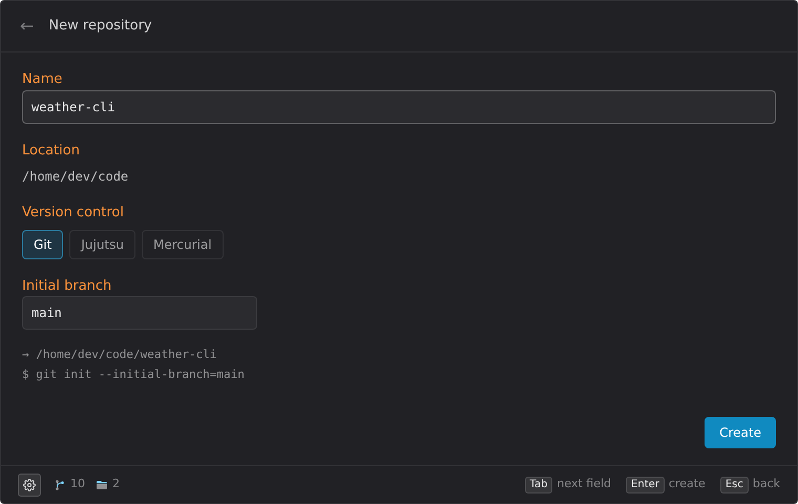
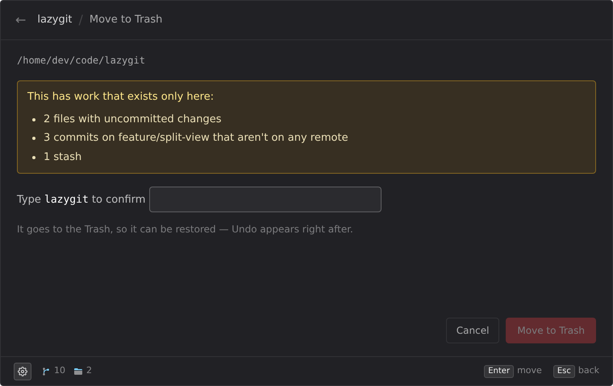
Your apps, too
Start the search with > and it looks through your installed applications instead, the ones you use most first. A second hotkey opens straight into it, and Shift Enter runs one as administrator.
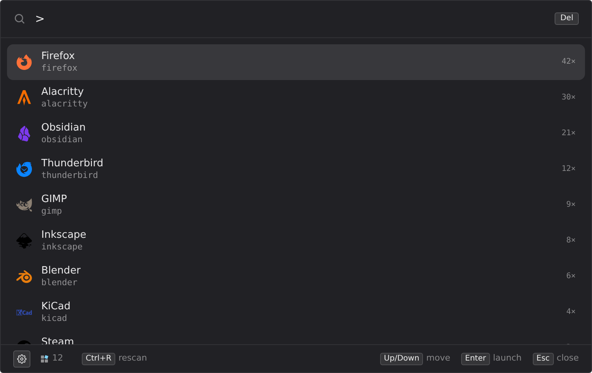
Install
Windows
The installed version updates itself when a new one is out.
- Installer (
.exe) - Portable zip, if you'd rather not install
The builds aren't code-signed yet, so SmartScreen may ask first: choose More info, then Run anyway.
Linux
Signed package repositories for apt, dnf and pacman, so updates arrive with the rest of your system. Set one up in three commands.
Or as a Flatpak:
flatpak remote-add --if-not-exists --user dev-prompt \ https://seraphx2.github.io/dev-prompt/dev-prompt.flatpakrepo flatpak install --user dev-prompt io.github.seraphx2.devprompt
It runs on the GNOME runtime from Flathub, so add that remote first if you haven't (details).
There's also an AppImage, which updates itself.